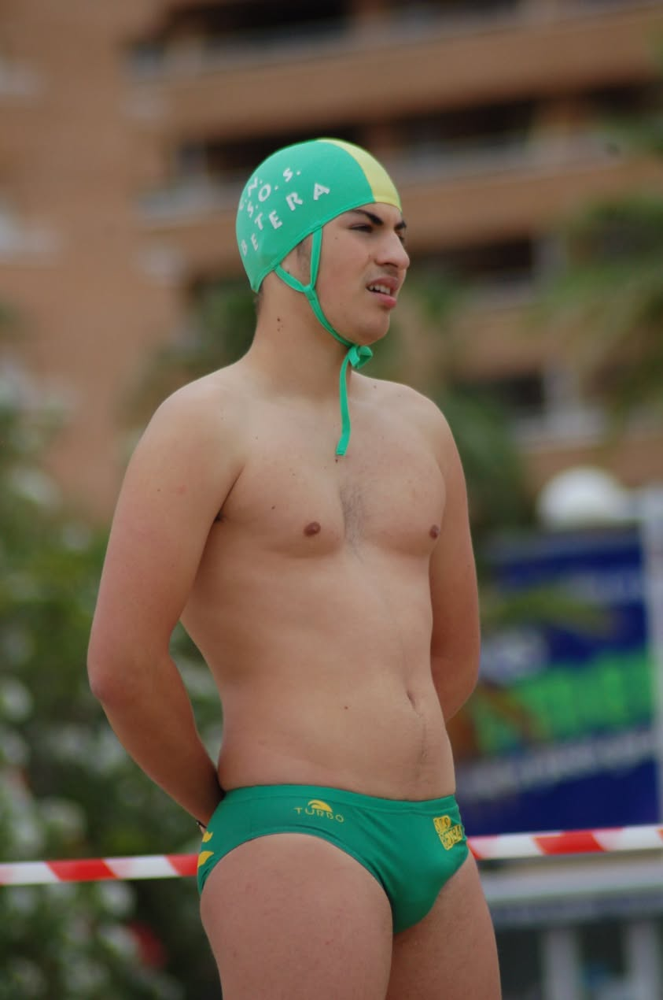

Jaime Laparra Navarro
"Laparra"
Especialidad: Natación adaptada - braza
Edad: 25 años
Club: CD Aquatic Campanar
Biografía
Jaime es un nadador paralímpico español nacido en 1999, que compite en la categoría SB9, destinada a deportistas con discapacidad física moderada. Representa al Club Deportivo Aquatic Campanar y es miembro de la Federación de Deportes Adaptados de la Comunidad Valenciana (FESA)
Logros Deportivos
- 100 m braza masculino adaptado oro para Jaime Laparra Navarro
- 🥇 50 Metros Braza en el Trofeo Internacional Castalia Castellón (TICC) 2024
- Campeonato de España Absoluto por Clubes de Natación Adaptada 2024, celebrado en Terrassa, logró un tiempo de 1:18.46 en esta distancia, posicionándose como uno de los nadadores más destacados en su categoría